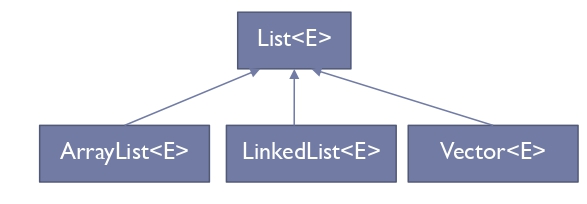

Generics#
¿Por qué Generics?
Generics permite que, al definir una clase, interfaz o método, se puedan utilizar tipos (clases o interfaces) como parámetros.
Busca independizar el proceso del tipo de datos sobre los que se aplica.
Definición de modelos generales.
¿Y esto que acarrea?
Al utilizar parámetros en la definición de clases, interfaces y métodos, se provee una nueva manera de reutilizar código.
Beneficios de un código que usa Generics
Chequeos de tipos más rigurosos en tiempo de compilación.
Eliminación de casts.
Implementación de algoritmos genéricos.
ArrayList lista = new ArrayList();
lista.add("Hola");
String cadena = (String) lista.get(0);
ArrayList<String> lista = new ArrayList<>();
lista.add("Hola");
String cadena = lista.get(0);
¿Se pueden utilizar tipos primitivos con Generics?
No se pueden utilizar con primitivos pero sí con las clases que corresponden con ellos.
No se puede hacer un genérico tipo
int, pero sí unInteger.Autoboxing a las clases wrappers.
Relación entre sobrecarga de métodos y Generics
Si las operaciones realizadas por varios métodos sobrecargados son idénticas, pueden codificarse de manera compacta utilizando un método genérico.
Con base en los tipos de los argumentos que se pasan al método genérico, el compilador maneja cada llamada al método de manera apropiada.
Además de establecer las llamadas a los métodos, el compilador determina si las operaciones en el cuerpo del método se pueden aplicar a los elementos del tipo almacenado en el argumento de la clase genérica (arreglo,
ArrayList).
Tipos Genéricos
public class Caja {
private Object objeto;
public void modificar(Object objeto) {
this.objeto = objeto;
}
public Object dar() {
return objeto;
}
}
Problemas con una clase no genérica
No se puede verificar en tiempo de compilación cómo se utiliza la clase.
Una parte del código puede ubicar un tipo de objeto en la
Cajay esperar que se retorne un objeto de ese mismo tipo, mientras que, por error, en otra parte del código se le puede pasar otro tipo de objeto, generando un error en tiempo de ejecución.
¿Qué es mejor, un error en tiempo de compilación o en tiempo de ejecución?
Un error en tiempo de compilación.
Errores en tiempo de compilación son más fáciles de encontrar.
Declaración de una clase genérica
Al momento de declarar la clase, luego del nombre de ésta, se especifican los parámetros de tipos delimitados por
< >.Los objetos a ser utilizados dentro de la clase se reemplazan por el tipo de parámetro de entrada.
Estas variables de tipo pueden ser de cualquier tipo no primitivo.
El mismo procedimiento puede utilizarse para declarar interfaces genéricas.
public class Caja<T> {
private T tipo;
public void modificar(T tipo) {
this.tipo = tipo;
}
public T dar() {
return tipo;
}
}
Declaración de una variable de tipo genérica
Caja<Integer> cajaEnteros;
Caja<Double> cajaReales;
Caja<String> cajaString;
Caja<Caja<String>> cajaCajaString;
Creación de un objeto de tipo genérico
Caja<Integer> cajaEnteros = new Caja<Integer>();
Caja<Integer> cajaEnteros = new Caja<>();
¿Por qué es válido Caja<Integer> cajaEnteros = new Caja<>();?
Al invocar el constructor de una clase genérica se pueden reemplazar los argumentos de tipo con un conjunto vacío siempre y cuando el compilador pueda determinarlos o inferirlos a partir del contexto.
Como este conjunto vacío se denota como
< >se denomina notación diamante.
Clase con múltiples parámetros de tipos#
Definición de la interfaz genérica ITerna
interface ITerna<T, U, V> {
T getFirst();
U getSecond();
V getThird();
void setFirst(T first);
void setSecond(U second);
void setThird(V third);
}
Implementación de la clase genérica Terna con 7 constructores
class Terna<T, U, V> implements ITerna<T, U, V> {
private T first;
private U second;
private V third;
// Constructor 1: Constructor vacío
public Terna() {
this.first = null;
this.second = null;
this.third = null;
}
// Constructor 2: Un solo parámetro (solo first)
public Terna(T first) {
this.first = first;
this.second = null;
this.third = null;
}
// Constructor 3: Dos parámetros (first y second)
public Terna(T first, U second) {
this.first = first;
this.second = second;
this.third = null;
}
// Constructor 4: Tres parámetros (first, second y third)
public Terna(T first, U second, V third) {
this.first = first;
this.second = second;
this.third = third;
}
// Constructor 5: Solo second y third
public Terna(U second, V third) {
this.first = null;
this.second = second;
this.third = third;
}
// Constructor 6: Solo first y third
public Terna(T first, V third) {
this.first = first;
this.second = null;
this.third = third;
}
// Constructor 7: Inicialización con otro objeto de tipo Terna
public Terna(Terna<T, U, V> otraTerna) {
this.first = otraTerna.first;
this.second = otraTerna.second;
this.third = otraTerna.third;
}
// Getters
@Override
public T getFirst() {
return first;
}
@Override
public U getSecond() {
return second;
}
@Override
public V getThird() {
return third;
}
// Setters
@Override
public void setFirst(T first) {
this.first = first;
}
@Override
public void setSecond(U second) {
this.second = second;
}
@Override
public void setThird(V third) {
this.third = third;
}
// Método para mostrar la terna
public void mostrarTerna() {
System.out.println("(" + first + ", " + second + ", " + third + ")");
}
}
Clase principal con ejemplos de uso
public class Main {
public static void main(String[] args) {
// Instanciaciones con distintos tipos de datos
Terna<Integer, String, Double> terna1 = new Terna<>(1, "Hola", 3.14);
Terna<String, Boolean, Character> terna2 = new Terna<>("Texto", true, 'A');
Terna<Double, Integer, String> terna3 = new Terna<>(9.8, 42, "Ejemplo");
// Instanciaciones usando distintos constructores
Terna<Integer, String, Double> terna4 = new Terna<>(5);
Terna<Integer, String, Double> terna5 = new Terna<>(5, "Mundo");
Terna<Integer, String, Double> terna6 = new Terna<>(null, "Test", 2.71);
Terna<Integer, String, Double> terna7 = new Terna<>(terna1); // Copia de otra terna
// Mostrar valores de las ternas
System.out.print("Terna 1: ");
terna1.mostrarTerna();
System.out.print("Terna 2: ");
terna2.mostrarTerna();
System.out.print("Terna 3: ");
terna3.mostrarTerna();
System.out.print("Terna 4: ");
terna4.mostrarTerna();
System.out.print("Terna 5: ");
terna5.mostrarTerna();
System.out.print("Terna 6: ");
terna6.mostrarTerna();
System.out.print("Terna 7 (Copia de Terna 1): ");
terna7.mostrarTerna();
// Modificación de valores
terna1.setFirst(99);
terna1.setSecond("Modificado");
terna1.setThird(2.71);
System.out.print("Terna 1 modificada: ");
terna1.mostrarTerna();
}
}
¿Cual sería una interfaz genérica estándar en java?

¿Se pueden restringir los tipos genéricos?
Se pueden restringir los tipos genéricos de tal manera que se pueda trabajar con un tipo específico y sus subtipos.
Para establecer el límite superior, se coloca después del nombre del parámetro de tipo la palabra clave
extendsy el nombre de la clase o interfaz que representa dicha restricción.extends se utiliza para clases e interfaces.
public class CajaNumeros<T extends Number> {
private T dato;
public T darElemento() {
return dato;
}
public void modificarDato(T dato) {
this .dato = dato;
}
}
Tipos Raw#
Es el nombre de una clase o interfaz genérica cuando no se le pasa ningún argumento de tipo.
Caja cajaCruda = new Caja();
En este caso, \(Caja\) es un tipo raw de \(Caja<T>\).
Un tipo de clase o interfaz no genérica no es un tipo raw.
¿Qué advertencias se pueden presentar al utilizar tipos raw?
Se presenta una advertencia ya que a un tipo parametrizado se le asigna un tipo raw.
Caja cajaCruda = new Caja();
Caja<Integer> intCaja = cajaCruda;
Se presenta una advertencia pues el tipo raw se salta los chequeos de tipo genérico y así pasa su manejo de código inseguro a tiempo de ejecución.
Caja<String> stringCaja = new Caja<>();
Caja cajaCruda = stringCa
¿Qué son los métodos genéricos?
Son aquellos métodos que introducen su propio tipo de parámetros.
Es similar a la declaración de tipo genérica, pero el alcance del parámetro está limitado al método donde se declara.
Se admiten métodos genéricos estáticos y no estáticos, al igual que constructores genéricos.
La sintaxis de un método genérico incluye un parámetro de tipo entre < > y aparece antes del tipo de retorno del método.
public class GenericMethodTest i
// generic method printArray
public static <E > void printArray( E[] inputArray ) {
// Display array elements
for(E element : inputArray) {
System.out.print(element+" ");
}
System.out.println();
}
public static void main(String args[]) {
// Create arrays of Integer, Double and Character
Integer[] intArray = {1 1, 2, 3, 4, 5 5};
Double[] doubleArray = {1.1, 2.2, 3.3, 4.4 };
Character[] charArray = { 'H', 'E', 'L', 'L', '0' };
System.out.println("Array integerArray contains:");
printArray(intArray); // pass an Integer array
System.out.println("Array doubleArray contains:");
printArray (doubleArray) ;// pass a Double array
System.out.println("Array characterArray contains:");
printArray(charArray);
¿Se puede utilizar el operador relacional con tipos referenciados?
No, sin embargo, es posible comparar dos objetos de la misma clase, si esa clase implementa a la interfaz genérica Comparable
. Los objetos de clases que implementan Comparable
tienen el método compareTo(T t). Todas las clases de envoltura de tipos para tipos primitivos implementan a Comparable
. Un beneficio de implementar la interfaz genérica Comparable
es que los objetos de clases que implementan esta interfaz pueden utilizarse con métodos de ordenamiento y búsqueda sobre las clases Collections.
class GenericInsertionSorter {
public <T extends Comparable<T>> void sort(T[] elems) {
int size = elems.length;
for ( int outerLoopIdx = 1; outerLoopIdx < size; outerLoopIdx++) {
for ( int innerLoopIdx = outerLoopIdx; innerLoopIdx > 0; innerLoopIdx−−) {
if (elems[innerLoopIdx − 1].compareTo(elems[innerLoopIdx]) > 0) {
T temp = elems[innerLoopIdx − 1];
elems[innerLoopIdx − 1] = elems[innerLoopIdx];
elems[innerLoopIdx] = temp;
}
}
}
}
}
Wildcards#
El signo de interrogación
?, también denominado comodín o wildcard representa un tipo no conocido.Ejemplos: \(Collection<?>\), \(List<? extends Number>\), \(Pair<String,?>\).
Los comodines pueden utilizarse en gran variedad de situaciones, como tipo del parámetro, campo o variable local.
Los wildcard nunca se utilizan como un argumento de tipo para una invocación de un método genérico o una creación de una instancia de una clase genérica.
¿Qué no permite Generics?
No se puede definir un miembro de una clase como estático genérico parametrizado. Cualquier intento de este tipo produce un error de compilación, pues hace una referencia estática a un tipo T no estático.
No se pueden crear instancias de tipo T (tipo genérico).
Generics no es compatible con tipos de datos primitivos. Aunque si se pueden utilizar las clases wrappers en lugar de los tipos de datos primitivos y luego usar los primitivos cuando se pasan los valores.
No se puede crear una clase Excepción genérica.